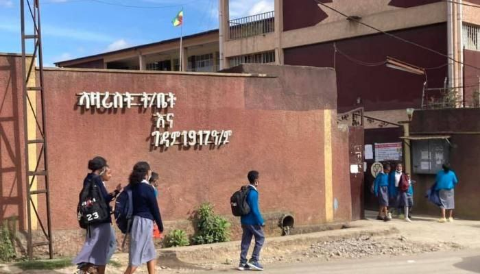

ሽራሮ ከባድ መሳሪያ ተተኩሷል ተባለ

@bbc amharic
ሮይተርስ ዛሬ ይዞት በወጣው ዘገባ ባለፈው ሳምንት የመጨረሻ ቀናት ላይ የኤርትራ ጦር በሽራሮ ከተማ ላይ በከፈተው ጥቃት አንዲት የ14 ዓመት ታዳጊ መገደሏን እና 18 ሰዎች ደግሞ መቁሰላቸውን አመልክቷል። ሮይተርስ ፤ ከሰብዓዊ ድርጅት ተቋማት የተገኘ መረጃ የሰፈረበት የተባበሩት መንግሥታት ድርጅት (UN) ሰነድ መመልከቱን በመግለፅ ነው ዘገባውን ይዞ የወጣው። በዚህም የኤርትራ ጦር ቢያንስ 23 ጊዜ ወደ ሽራሮ ከባድ መሳሪያ ተኩሷል። ባለፈው ቅዳሜ እና እሁድ ግንቦት 20 እና 21 ቀን 2014 ዓ.ም. የኤርትራ ሠራዊት በሽራሮ ከተማ ላይ ከፍቶት ነበረ በተባለው ጥቃት፣ ከቀያቸው የተፈናቀሉ ሰዎች ተጠልለውበት የነበረ #ትምህር_ቤት ጉዳት ደርሶበታል። የከባድ መሳሪያ ጥቃት ተፈጽሞባታል የተባለችው ሽራሮ ከኤርትራ ድንበር 11 ኪሎ ሜትር አካባቢ ርቀት ላይ የምትገኝ ናት።
አዲስ አበባ ዩኒቨርሲቲ ከመጪው ዓመት ጀምሮ ከመንግስት ጣልቃ ገብነት ነጻ
by Dawit Tesfaye
የትምህት ሚኒስቴር ፤ አዲስ አበባ ዩኒቨርሲቲ ከመጪው ዓመት ጀምሮ ከመንግስት ጣልቃ ገብነት ነጻ ሆኖ ራሱን የሚያስተዳድር ዩኒቨርሲቲ እንደሚሆን አስታወቀ፡፡ በኢትዮጵያ የሚገኙ ዩኒቨርሲቲዎች ነጻ ሆኖ የመመራት መብት የሚሰጥበት የውይይት መድረክ በዛሬው ዕለት ተካሄዷል።
የትምህርት ሚኒስትር ዴኤታ ዶክተር ሳሙኤል ክፍሌ÷ የአዲስ አበባ ዩኒቨርሰቲን ተከትሎ ሌሎች ዩኒቨርሲቲዎች ከሁለት እስከ አምስት ዓመት ባለው ጊዜ ውስጥ በሂደት ወደ ነጻ ዩኒቨርሰቲነት እንደሚቀየሩ ተናግረዋል። የአዲስ አበባ ዩኒቨርሲቲ ከመንግስት ጣልቃ ገብነት ውጪ በመሆን ነጻ ተቋም እንዲሆን የተወሰነውም መንግስት ዩኒቨርሲቲዎችን በራስ ገዝ አስተዳደር እንዲተዳደሩ የሚያስችል ውሳኔ ማሳለፉን ተከትሎ መሆኑን መግለፃቸውን ኤፍ ቢ ሲ ዘግቧል።
መንግስተ ሰማያት የዋርስካ

by Dawit Tesfaye
የአርቲስት ዳዊት ነጋ ቤተሰቦች እና ጓደኞች ለቢቢሲ ትግርኛ የሰጡት ቃል ፦ " ባደረበት ድንገተኛ ህመም ዓርብ ዕለት ነው አዲስ አበባ አዲስ ህይወት ሆስፒታል የገባው። ባለፈው ሳምንት ሰኞ ዕለት በጉንፋን መልክ የጀመረ ህመሙ ከተባባሰ በኋላ ዓርብ ወደ ሆስፒታል ተወስዶ እስከ ቅዳሜ ድረስ ህክምና ሲደረግለት ቆይቷል። ትናንት እሁድ ከሰዓት በኋላ ህመሙ ሲጸናበት ወደ ጽኑ ህሙማን ክትትል ክፍል ገብቷል ማታ 1፡ዐዐ ሰዓት አካባቢ ህይወቱ አልፏል። ወደሆስፒታሉ ከመምጣቱ በፊት ህመሙን ለማስታገስ በቤት ውስጥ ግሉኮስ ይወሰድ ነበር። ህመሙ ሲበረታበት ወደ ሆስፒታል ከተወሰደ በኋላ የስኳር መጠኑ መጨመሩን እና ህመሙ ወደ የሳንባ ምች (ኒሞኒያ) መቀየሩን ተነግሮታል። የዳዊት አስከሬን ላይ ተጨማሪ ምርመራ ይደረጋል።"
በአዲስ አበባ በጎርፍ የተወሰደው ህጻን እስካሁን አለመገኘቱ ተገለፀ!!
by Dawit Tesfaye
በአዲስ አበባ ከተማ አዲሱ ገበያ አካባቢ በሚገኘው ላዘሪስት ት/ ቤት ወንዝ ውስጥ የገባው ማርኮን ይገረም አለመገኘቱን የእሳት እና አደጋ ስጋት ሥራ አመራር ኮሚሽን አስታወቀ። የአዲስ አባባ እሳትና የአደጋ ስጋት ስራ አመራር ኮሚሽን የኮሙኒኬሽን ባለሙያ የሆኑት አቶ ንጋቱ ማሞ የሕዝብ ግንኙነት ባለሙያ ንጋቱ ማሞ ለአል ዐይን እንዳሉት የኮሚሽኑ ሰራተኞች ፍለጋ ላይ ናቸው። ህጻኑ ከጠፋ አምስት ቀናት ቢቆጠሩም እስካሁን አለመገኘቱን አቶ ንጋቱ ገልጸዋል። በጎርፍ የተወሰደውን ማርኮን ይገረም አካል ለማግኘት ፍለጋው ቀጥሏል ብለዋል።
ህጻኑ ረቡዕ ዕለት ወንዝ ውስጥ የገባው።ዘንድሮ ትምህርትን "ሀ" ብሎ ሊጀምር በአዲስ አበባ አዲሱ ገበያ አካባቢ በሚገኘው ላዘሪስት ት/ ቤት የገባው ማርኮን ይገረም ባለፈው ረቡዕ ከት/ ቤት ሲወጣ ከት/ ቤቱ አጥር ውጭ ያለው ትቦ ውስጥ በመግባቱ በትቦ ውስጥ የነበረው የጎርፍ ውሃ ይዞት ሄዷል። ቤተሰብ ቀብሮ እርም ማውጣት ቢፈልግም የ 4 አመቱ ልጅ አስክሬን ግን እስካሁን አልተገኘም።በት/ ቤቱ አካባቢ ካሉ ወንዞች ጀምሮ የአፍንጮ በር በቀበና በአቃቂ በአባ ሳሙኤልም ባሉ ወንዞች ጎረቤትና ዘመድ አዝማድ እንዲሁም የእሳት እና አደጋ ስጋት ሥራ አመራር ኮሚሽን ሰራተኞች ፍለጋ ማድረጋቸውን ቀጥለዋል።
ፒያሳ ወርቅ ቤቶች ጀርባ በደረሰ የእሳት አደጋ የ15 አባወራ ቤቶች ወደሙ!!

by Dawit Tesfaye
ሶስት ሰዎች ላይ የጭስ መታፈን አደጋ ደርሷል በአዲስ አበባ በአራዳ ክፍለ ከተማ ፒያሳ ልዩ ስሙ ወርቅ ቤቶች ጀርባ ዛሬ ከቀኑ 9ሰዓት ከ37 ደቂቃ ላይ በደረሰ የእሳት አደጋ የ15 አባወራዎች ቤቶች መውደማቸውን የእሳት አደጋ ስራ አመራር ኮሚሽን አስታውቃል፡፡ የኮሚሽኑ የህዝብ ግንኙነት ባለሙያ አቶ ንጋቱ ማሞ ለብስራት ሬድዮ እንደተናገሩት በአደጋው አንድ የኮሚሽኑ የአደጋ ጊዜ ሰራተኛ እና ሁለት ነዋሪዋች ላይ በጭስ በመታፈናቸው ጉዳት ደርሶባቸዋል ብለዋል። የእሳት አደጋው የደረሰበት ቦታ ከወርቅ ቤቶቹ ጀርባ ሲሆኑ ቤቶቹ እጅግ የተጠጋጉ፣ የኤሌክትሪክ ዝርጋታቸው እና ቤቶቹ የተሰሩበት ግብዐቶች ውድመቱን ከባድ አድርጎታል። በተጨማሪ የቆዩ ነባር ቤቶች በመሆናቸው አደጋው ሰፊ ሆኖ የበርካታ አባወራ ቤቶች እንዲወድሙ እንዳደረገው ተነግሯል። ወደ ወርቅ ቤቶቹ እሳቱ እንዳይዛመት እና ከፍተኛ የንብረት ውድመት እንዳይደርስ የኮሚሽኑ ሰራተኞች መትጋታቸውን አቶ ንጋቱ ጨምረው ተናግረዋል።አደጋውንም ለመቆጣጠር 75 የአደጋ ጊዜ ሰራተኞች የተሳተፋ ሲሆን አስር የእሳት አደጋ ተሽከርካሪዋች 83ሺ ሊትር ውሃ አንድ ውሃ ጫኝ ተሽከርካሪ ከመንገዶች ባለስልጣን ጥቅም ላይ ውለዋል።እሳቱን ለመቆጣጠር አንድ ሰዓት ከሰላሳ ደቂቃ ፈጅታል።